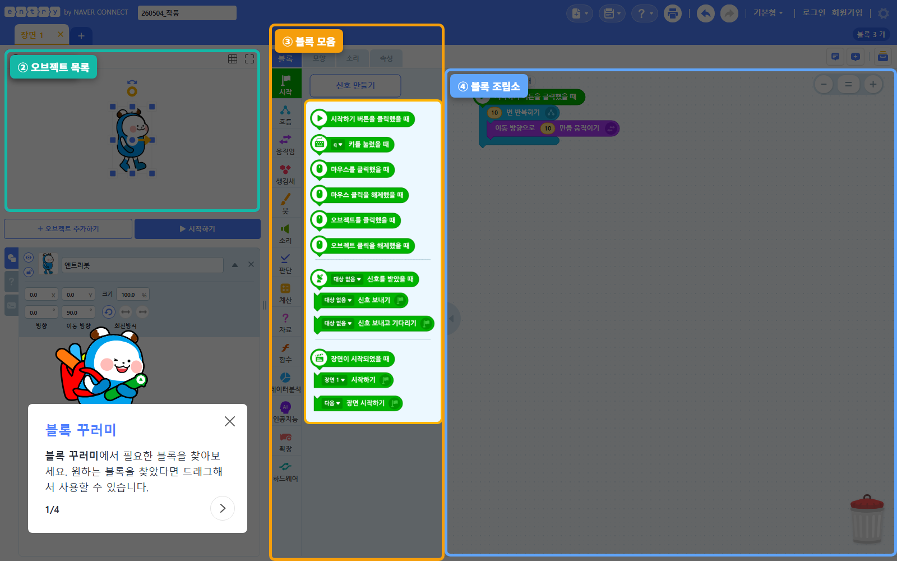
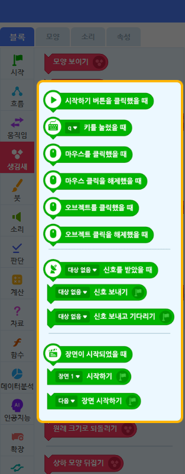

1. 게임 소개 — 간단 RPG
"마을에서 출발해 적을 만나면 전투 장면으로! 공격 버튼으로 적을 물리치자."
사용할 오브젝트 · 장면
- 주인공 — 마우스(또는 키)로 움직이는 우리 캐릭터
- 적 — 마을에서 만나면 전투가 시작되는 상대. 전투에서 적HP를 깎아 물리침
- 장면 2개 — 마을(탐험) → 전투(싸움). 장면을 바꿔 화면이 통째로 전환됩니다.
게임 ①②에서 다룬 반복 · 조건 · 충돌 · 변수 · 신호 위에, 이번에는 장면 전환(화면을 통째로 바꾸기)과 함수 만들기(반복 동작에 이름 붙이기) 두 가지 새 개념을 얹습니다. 특히 함수는 3단계 파이썬의 def 로 곧장 이어지는 핵심 다리입니다.
이 문서는 강사용입니다. 아래 블록 배열은 정답입니다 — 수업 전 한번 직접 만들어 보세요. 단, 수업 중에는 자녀에게 정답 블록을 보여주지 말고 AI 도움 규칙(아래)으로 유도하세요.
STEP 1 — 장면·오브젝트 준비
1-1. 장면 2개 만들기 ★ 이번 회차 새 작업
- 실행 화면 위쪽 "장면" 탭에서 "+" 버튼을 눌러 장면을 하나 더 추가합니다.
- 장면 이름을 각각 "마을", "전투"로 바꿉니다. (탭 이름을 더블클릭하면 수정)
1-2. 오브젝트 배치
- 마을 장면에 주인공·적을 추가해 배치합니다.
- 전투 장면에도 주인공·적을 추가해 배치합니다. (장면마다 따로 추가!)
1-3. 저장
상단 우측 "저장하기" → 작품 이름 "간단 RPG".

장면마다 같은 오브젝트도 코드를 따로 짜야 합니다. 마을의 주인공과 전투의 주인공은 이름은 같아도 코드가 완전히 별개입니다. "마을에서 짠 코드가 전투에서도 동작하겠지?"는 틀립니다 — 각 장면에서 다시 짜야 합니다.
블록 카테고리는 어디에? (참고)
아래 STEP에서 쓰는 카테고리 위치입니다. 막혔을 때만 참고하세요. 함수 카테고리는 블록 모음 목록 아래쪽에 따로 있습니다.




블록 모음 위쪽 검색창에 일부만 입력해도 찾아줍니다. 예: "장면", "함수", "이동", "닿", "모양", "기다".
STEP 2 — 마을: 주인공 이동 + 적 만나면 전투로
⚠️ "마을" 장면 → "주인공" 오브젝트 선택 (반드시 먼저!)
2-1. 주인공 이동
2-2. 적에 닿으면 전투 장면으로 ★ 장면 전환
같은 "주인공" 오브젝트에 새 시작 블록으로 별도 흐름을 추가합니다.
- 적 에 닿았는가? → 판단 카테고리 (드롭다운을 "적"으로 변경)
- 전투 장면 시작하기 → 시작 카테고리, 드롭다운에서 "전투" 선택. 이 블록이 실행되면 화면이 전투 장면으로 통째로 바뀝니다.
▶ 시작하기 → 주인공이 마우스를 따라옵니다. 적에게 데려가 닿으면 화면이 전투 장면으로 전환됩니다.
STEP 3 — 적HP 변수 + 전투 시작
⚠️ "전투" 장면 → "적" 오브젝트 선택
자료 → 변수 만들기로 "적HP" 변수를 만듭니다. (모든 오브젝트가 함께 쓰는 변수)
- 전투 장면이 시작되었을 때 → 시작 카테고리. STEP 2의 전투 장면 시작하기가 실행되는 순간 이 블록이 동작합니다.
- 적HP 를 50 (으)로 정하기 → 자료 카테고리.
적HP를 전투 장면이 시작될 때마다 50으로 되돌려야, 적을 물리치고 다시 와도 처음부터 싸울 수 있습니다. 시작 버튼 한 번만 초기화하면 두 번째 전투가 망가집니다.
STEP 4 — "공격하기" 함수 만들기
4-1. 함수 만들기 ★ 이번 회차 핵심 새 개념
- 블록 모음 왼쪽 목록 아래쪽 "함수" 카테고리로 이동
- "함수 만들기" 클릭 → 함수 정의 화면이 열립니다.
- 함수 이름을 "공격하기"로 정합니다. (블록 이름 칸에 입력)
- 정의 영역에 아래 동작 블록들을 끼운 뒤 "확인/저장".
함수 만들기 버튼은 블록 꾸러미(블록 모음)의 "함수" 카테고리 → "함수 만들기"에 있습니다. 함수를 먼저 정의해야, 다른 곳에서 부를 수 있는 공격하기 호출 블록이 생깁니다.
4-2. "공격하기" 함수 정의 내용
"공격할 때 할 일"(모양 바꾸기 → 적HP -10 → 잠깐 → 모양 되돌리기)을 하나로 묶어 "공격하기"라는 이름을 붙인 것이 함수입니다. 이제 "공격하기"라고 부르기만 하면 이 묶음이 통째로 실행됩니다. 같은 동작을 매번 다시 짤 필요가 없습니다.
STEP 5 — 공격 버튼으로 함수 호출
⚠️ "전투" 장면 → "주인공"(또는 "적") 오브젝트 선택 — STEP 4에서 함수를 정의한 오브젝트에 붙입니다.
- 스페이스 키를 눌렀을 때 → 시작 카테고리 (드롭다운에서 "스페이스" 선택)
- 공격하기 → 함수 카테고리. STEP 4에서 함수를 만들었어야 이 호출 블록이 보입니다!
STEP 4는 함수를 "정의"(만들기)한 것이고, STEP 5는 함수를 "호출"(부르기)하는 것입니다. 정의만 하고 부르지 않으면 아무 일도 안 일어납니다. 스페이스를 누를 때마다 공격하기 묶음이 실행되어 적HP가 10씩 깎입니다.
전투 장면에서 스페이스를 누르면 주인공 모양이 잠깐 바뀌고 적HP가 50 → 40 → 30 … 줄어듭니다.
STEP 6 — 승리 판정
⚠️ "전투" 장면 → "적" 오브젝트에 새 시작 블록으로 추가합니다.
- 적HP ≤ 0 → 판단의 비교 블록(작거나 같다) + 자료의 적HP 변수
- "승리!" 을(를) 말하기 → 생김새 카테고리
- 모든 코드 멈추기 → 흐름 카테고리
▶ 시작하기 → 마을에서 적에 닿으면 전투로 전환 → 스페이스로 공격해 적HP를 0으로 → "승리!"와 함께 멈춥니다.
2. 신개념 포인트
① 장면 전환 (장면 시작하기) — 전투 장면 시작하기로 화면을 통째로 다른 장면으로 바꿉니다. 마을과 전투는 서로 다른 무대(장면)이고, 각 장면은 ~ 장면이 시작되었을 때로 자기 코드를 시작합니다.
② 함수 만들기 (반복 동작에 이름 붙이기) — 자주 쓰는 동작 묶음에 "공격하기"라는 이름을 붙여두면, 그 이름을 부르기만(호출) 하면 묶음이 통째로 실행됩니다. 함수 = 코드 묶음에 이름 붙이기.
3. 🌉 파이썬으로 가는 다리
함수 = 코드 묶음에 이름 붙이기. 오늘 만든 "공격하기" 함수는 3단계에서 배울 파이썬의 def 와 똑같은 개념입니다 — 이름을 부르면(호출하면) 그 묶음이 실행됩니다.
엔트리에서 만든 함수가 파이썬에서는 이렇게 생깁니다 (3단계 미리보기):
오늘 "정의하고 → 이름으로 부른다"를 손으로 경험한 것이, 3단계 파이썬 def 를 자연스럽게 받아들이게 하는 다리입니다. 자녀에게 "이 '공격하기'가 나중에 파이썬에서 똑같이 나온다"고 꼭 짚어 주세요.
4. 자주 막히는 곳
전투 장면에서 주인공/적이 안 움직이거나 아무 코드도 안 함 → 장면별로 코드가 별개임을 잊은 것. 마을에서 짠 코드는 전투 장면 오브젝트에는 없습니다. 전투 장면에서 다시 코드를 붙여야 합니다.
스페이스를 눌러도 적HP가 안 줄어듦 → 함수를 정의만 하고 호출을 안 한 것. STEP 5의 공격하기 호출 블록을 빠뜨렸는지 확인. (정의 ≠ 호출)
두 번째 전투부터 적이 바로 죽거나 안 죽음 → 적HP가 전투 장면 시작마다 50으로 초기화되지 않음. STEP 3의 전투 장면이 시작되었을 때 → 적HP 를 50 으로 정하기가 있는지 확인.
"공격하기" 호출 블록이 함수 카테고리에 안 보임 → 함수를 먼저 만들지 않았거나, 함수를 만든 오브젝트와 다른 오브젝트를 보고 있기 때문.
5. AI 도움 규칙 (3단계)
(1) 10분 혼자 생각 → (2) AI에게 힌트만 요청 → (3) 직접 수정 + 말로 설명
자녀가 막혀도 즉답하지 않기. "어디서 막혔는지 말로 설명해봐" → "그럼 어떤 블록이 필요할 것 같아?" 순서로 유도하세요.
- 좋은 질문 예: "엔트리에서 반복되는 동작을 하나로 묶어 이름을 붙이려면 어떤 기능을 써야 해? 정답 말고 힌트만."
- 나쁜 질문 예: "RPG 게임 코드 알려줘."
완성 후 "이 블록이 왜 이렇게 동작하는지 말로 설명할 수 있는가?"를 꼭 확인하세요. 특히 "'공격하기' 함수를 왜 만들었고, 정의와 호출이 어떻게 다른지", 그리고 "장면을 왜 두 개로 나눴는지"를 설명하게 해보세요.
6. 변형 아이디어
자녀가 빨리 끝나거나 더 만들고 싶어할 때:
- 회복 아이템 — 주인공HP 변수를 추가하고, 아이템에 닿으면 주인공HP 에 +20 만큼 더하기. 회복도 "회복하기" 함수로 묶어보기.
- 적 여러 종류 — 약한 적/강한 적을 만들고 적마다 적HP 시작값을 다르게(30 / 80).
- 승리·패배 장면 분기 — "승리 장면"과 "패배 장면"을 따로 만들어, 적HP가 0이면 승리 장면, 주인공HP가 0이면 패배 장면으로 장면 시작하기.
이런 변형도 AI에게 "어떤 블록(또는 함수)을 추가해야 할까?"로 묻게 유도하세요.
참고 링크
- 엔트리 공식: https://playentry.org/
- 엔트리 매뉴얼: https://docs.playentry.org/
이 게임은 파이썬으로 가는 다리입니다. 장면 전환으로 "프로그램이 단계로 나뉜다"를, 함수로 "코드 묶음에 이름 붙이기 = def"를 손으로 경험합니다. Kay님이 한번 직접 만들어보면 자녀가 정의/호출에서 어디서 헷갈릴지 자연스럽게 보입니다.